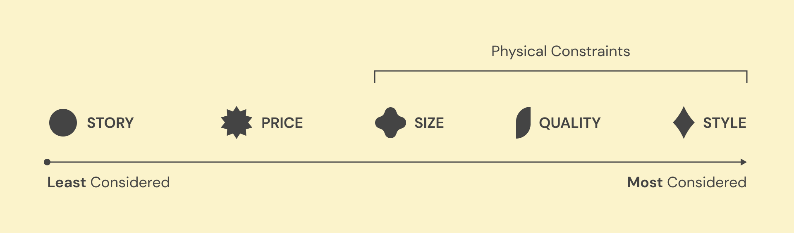
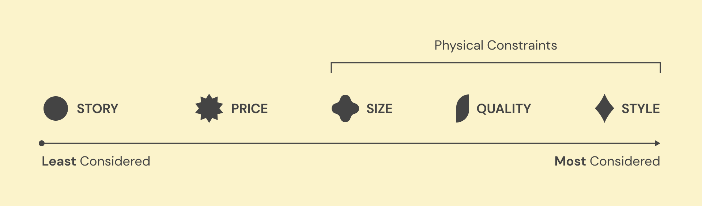
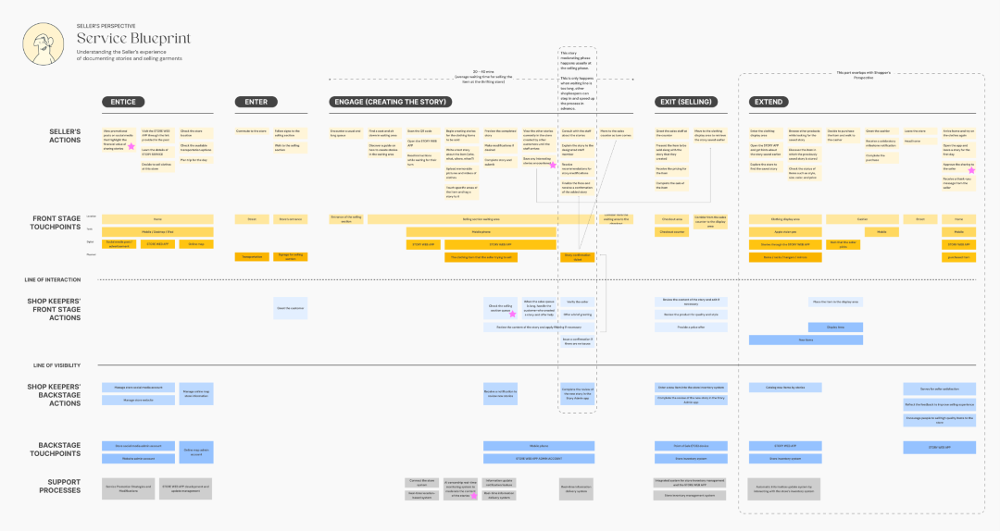
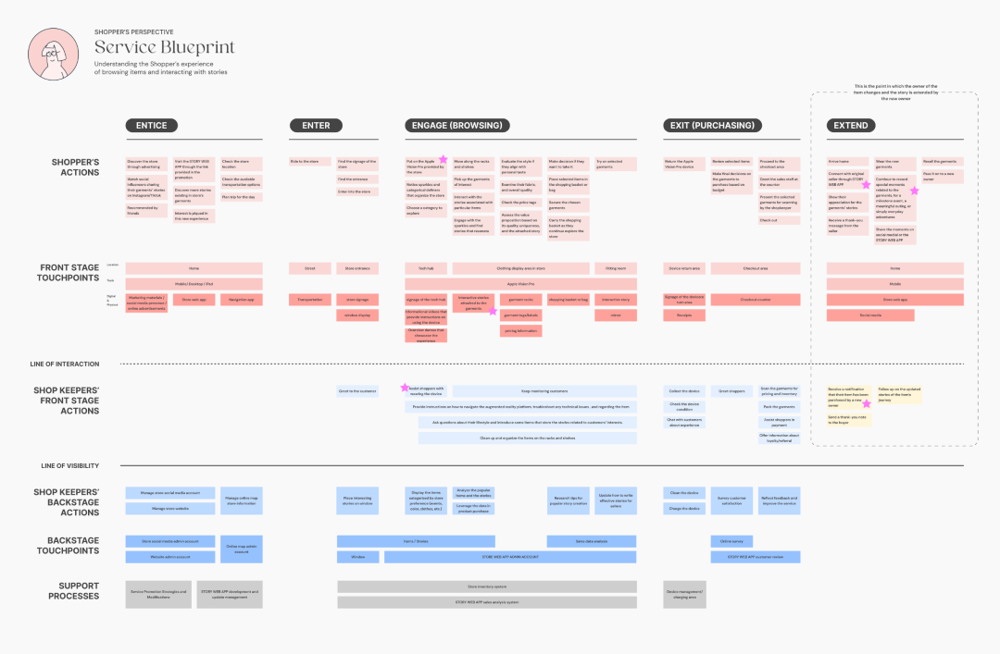

JAMES
HUA.
THREADTALES.
Speculative future project that explores a world in which Spatial User Interfaces, such as the Apple Vision OS, are integrated into our lives as a prevalent form of technology. How does this change the way in which people perceive and experience the world around them? Can we leverage these advances to bring potentially dated industries into more sustainable futures?
Continue reading to learn how we plan to bring emerging technology to the world of vintage fashion. Let’s revitalize secondhand shopping experiences with moments of surprise and joy using Spatial User Interfaces, so that shoppers have memorable experiences that extend the longevity of their garments.
As part of a three person team, I focused on capturing photographic and video assets, establishing a visual design system and user interface, and prototyping the experience. My teammates devised experience maps and service blueprints. All of us worked closely together to define the scope of the project, conduct primary and secondary research and analyze all insights.
TEAM
Jiao Shi
Yuha Kim
SKILLS
User Research
Experience Mapping
Service Blueprinting
Spatial UI Design
Vision OS Prototyping
PROGRAMS
Figma
Figjam
Adobe Premiere Pro
TIMEFRAME
May.'23 -
Aug.'23

Project Brief
The fashion industry has long been criticized for its harmful environmental impact. It has polluted clean water sources, depleted our natural resources, and generated of tons of waste in clothes. The detrimental impact of fashion is anticipated to worsen in the upcoming years. Currently, the industry accounts for...
Secondhand fashion offers a promising solution by extending the lifespan of clothing. In fact, the market is rapidly expanding and is projected to grow 127% by 2026 EDGE (2023, January). Future of Fashion: Secondhand, Waste, and Ownership Redirected. Each person that purchases secondhand clothing can prevent more than 500 pounds of carbon emissions every year American Apparel Association (2023, January). Industry Stats..
This is an industry in which the choices of individuals matter. We define the market. Despite its potential and current success, secondhand fashion still needs an extra push to shift mindsets and establish new behaviors that are grounded in sustainability. Envision a more sustainable future in which consumers wear their clothes until the end of their lifespans.
Research
Before engaging with spatial technology, our team sought to understand the behaviors of shoppers and the physical spaces of the secondhand fashion industry. Once we had gained an understanding of the interactions between people and spaces, we felt confident positioning spatial technology in intentional ways that add depth to the overall experience.

We found that shoppers actively consider 5 major factors while sorting through the chaos in secondhand stores. Physical constraints were self-reported as the most significant factors as to whether or not a shopper would purchase an item. However, these physical factors only satisfy basic criteria; they do not tap into the identity of shoppers and their emotional needs. The story of a item proved to be a powerful factor in decision making (when available).


Furthermore, vintage and thrift shopping has been described by shoppers as mentally exhausting, time-consuming, energy intensive and uncomfortable. With all of these challenges in mind, why do people still shop secondhand?
The chaos experienced in secondhand stores defines the heart of thrift and is essential to the experience. It is not something that necessarily needs to change. Each pain-point is built in as a vital piece of intentional friction that ultimately provides the greatest joy to shoppers. People love finding something they resonate with amidst the mess.


Memories are created from emotional highs and lows. Rather than attempt to resolve each pain-point, let’s exploit them. We’ll utilize stories to amplify special moments of discovery, so that we can spread delight and create even more memorable experiences. These memories will forge meaningful bonds between shoppers and clothes.

To start us off, we sought to understand the full extent of the shopper experience from start to end, so we mapped out shopper touchpoints, goals, actions and feelings. This foundational step enabled us to find fitting opportunities to insert moments of discovery for stories.
Experience
When we imagined how spatial interfaces would integrate into our world, our team was brimming with ideas. We knew that we wanted our choices to be deliberate and considerate as to what our experience should do and could do. These are the core principles that define our vision of the future and guide our focus for the experience.
Before we dive in, come meet our experiencers and take a glimpse at the experience at a high level.
 

How do sellers create and add stories? Where is this information stored and accessed? What changes arise in stores for shoppers obtain devices and for shopkeepers to maintain devices? And how does the store manage everything behind the scenes?
To answer these questions and more, we developed two blueprints by mapping out the entire service and roles of each stakeholder. They explore how front stage actions & touchpoints intersect with back stage actions & touchpoints. These are plotted along lines of visibility and interaction to create a seamless front stage experience for shoppers.
Our objective was to understand how to feasibly and successfully execute the experience on both ends. This involved detailing the roles that the seller, shopper and shopkeeper need to play and the information, tools and technology exchanged between them.


Holding our purchase close to our hearts, let’s reflect on the value that it brought us and others. Here are four types of value plotted across the three stakeholders in our experience. Each stakeholder had a unique takeaway.
Finally, long-lasting and measurable impact is central to this project. It is the only way to determine if the experience shaped sustainability. Success will be measured through the following metrics and methods:
